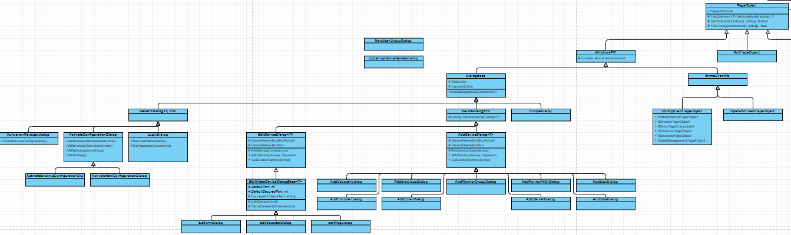

Usage of Dialog classes
Overview

DialogBase
derived from
WindowsPO(page object), which is a real window and not only a window part (aka page fragment, page component)abstract base class for dialogs with a confirmation and a cancellation option (usually via
OKandCancelbuttons)provides an easy way to close the dialog via
EndDialog(DialogCompletion dialogCompletion)wheredialogCompletionindicates the way how to close (confirm or cancel)public virtual PageObject EndDialog(DialogCompletion dialogCompletion)
SimpleDialog
derived from
DialogBasedescribes a very simple dialog which needs to get clicked away (Yes/No dialogs, OK-only dialogs)
e.g. an informational dialog without any deeper meaning to respectfor easy click away possibility two static methods are given
ClickAway(Window parentWindow, string windowsTitle, TimeSpan timeout, DialogCompletion dialogCompletion)ClickAway(Window parentWindow, DialogCompletion dialogCompletion, Func<Button> findConfirmationButton, Func<Button> findCancelButton)
GenericDialog<TConfirmationPo, TCancelPo>
derived from
DialogBasedescribes an abstract dialog with buttons to confirm or cancel the dialog (
OK,Cancelbutton)the generic type parameters
TConfirmationPoandTCancelPostand for the page objects which are returned as successors for confirmation and cancellationvia delegates the behavior to return these succeeding page objects is managed
the delegates can be set
- via constructor (recommended)
GenericDialog(..., Func<TConfirmationPo> confirmationCommand, Func<TCancelPo> cancelCommand) - via properties
Func<TConfirmationPo> ConfirmationCommand { get; set; }
- via constructor (recommended)
ActivateConfigurationDialog<TConfirmationPo, TCancelPo>
derived from
GenericDialog<TConfirmationPo, TCancelPo>base class for
ActivateExistingConfigurationDialogandActivateNewConfigurationDialogcontains additional logic to
- manage the UI control to force an activation and so on
- wait that the progress windows during activation disappears
ActivateExistingConfigurationDialog
- binds the generic type parameters of base class to
NullPageObjectandActivationManagerDialog
ActivateNewConfigurationDialog
- binds the generic type parameters of base class to
ConfigClientPageObjectandConfigClientPageObject - contains additional logic to handle activation metadata (description, delayed activation, time to take active)
Resources
- see also
IFindWindowStrategy